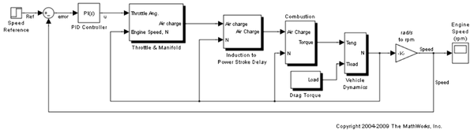
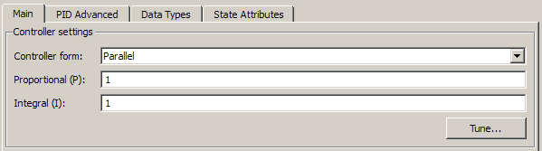
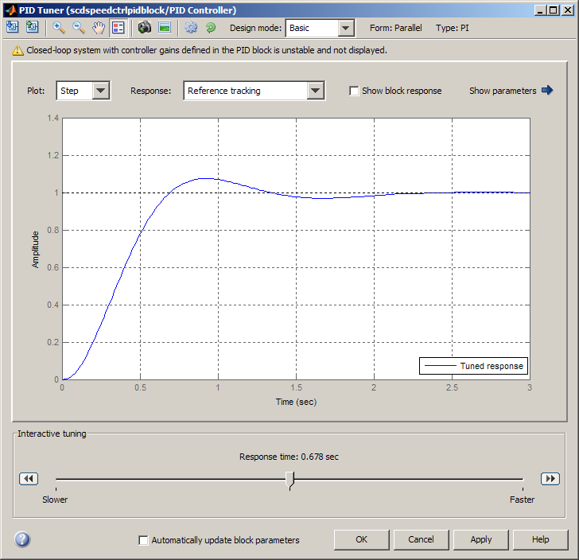
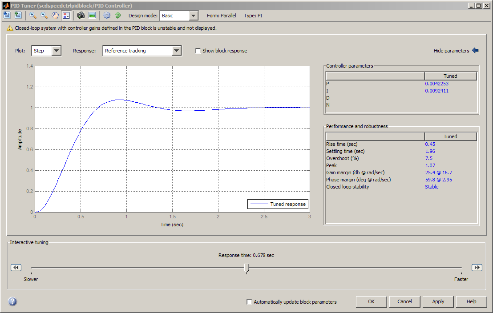
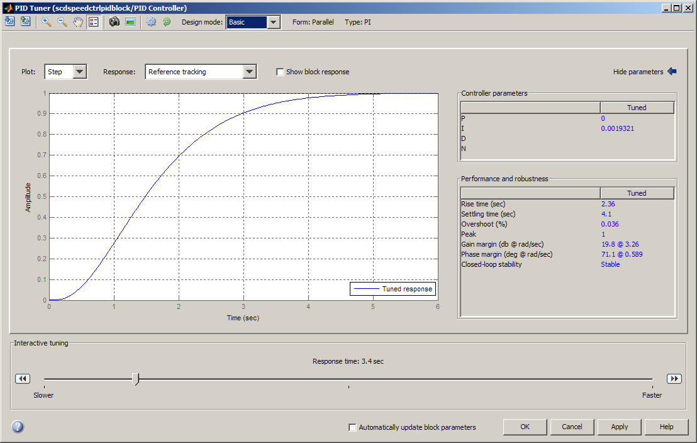
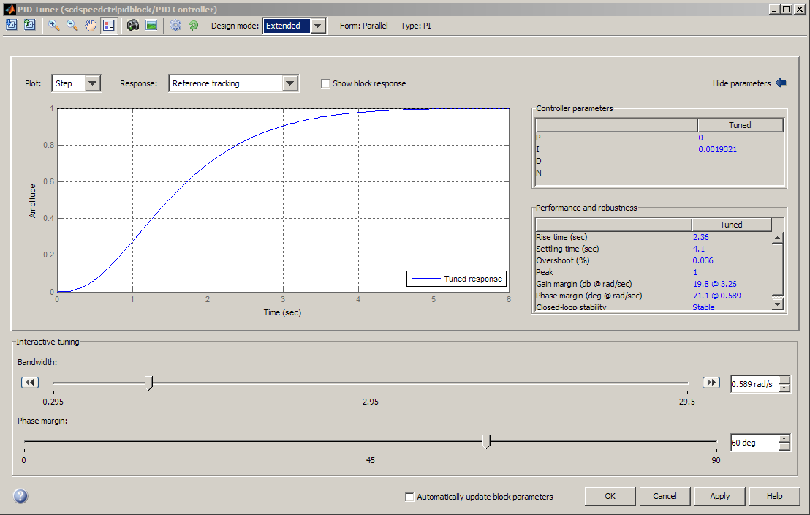
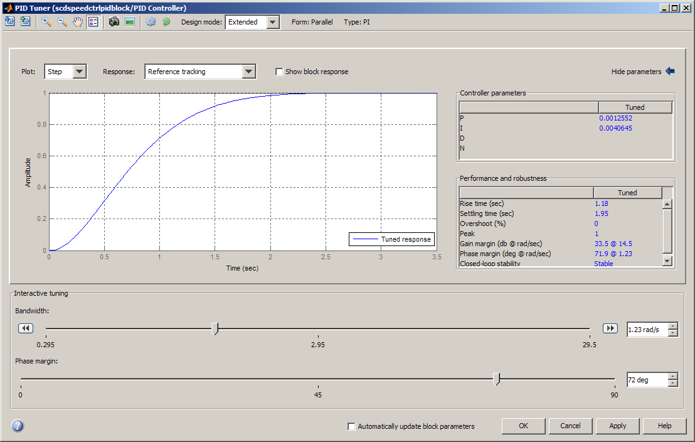
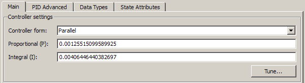
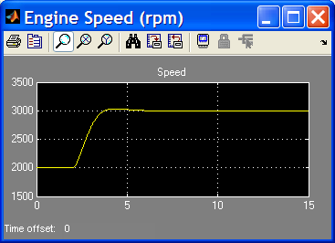

Simulink PID Controller ブロックの自動調整
目次
PID 調整器の紹介
PID 調整器は、Simulink® PID Controller ブロックに対する、応用範囲が広い高速な単一ループ PID 調整手段です。PID 調整器を使用すれば、望ましい応答時間を可能にするロバスト設計を実現できるように PID パラメーターを調整できます。
PID 調整器を使用した一般的な設計ワークフローには、以下の作業が含まれます。
(1) PID 調整器を起動する。起動時に、ソフトウェアが Simulink モデルから線形プラント モデルを自動的に計算し、初期コントローラーを設計します。
(2) 2 つの設計モードで設計基準を手動で調整することで、PID 調整器でコントローラーを調整する。PID 調整器が、システムをロバスト安定化させる PID パラメーターを計算します。
(3) 設計されたコントローラーのパラメーターを PID Controller ブロックにエクスポートし、Simulink でコントローラー性能の検証を実行する。
モデルを開く
少し時間をとって、モデルを調べます。
PID Controller ブロックを使用したエンジン スピード制御モデルを開く
open_system('scdspeedctrlpidblock');
 設計の概要
このデモでは、エンジン スピード制御ループ内で PI コントローラーを設計します。設計目標は、Simulink ステップ ブロック scdspeedctrlpidblock/Speed Reference からの基準信号に追従することです。設計要件は以下のとおりです。
- 整定時間が 5 秒未満である
- ステップ基準入力に対する定常偏差がゼロである
この例では、PID 調整器で PI コントローラー scdspeedctrl/PID Controller を設計することで、フィードバック ループを安定化させ、良好な基準追従性能を達成します。
PID 調整器を開く
PID 調整器を起動するには、PID Controller ブロックをダブルクリックして、ブロック ダイアログを開きます。[メイン] タブで、[調整] をクリックします。

初期 PID 設計
PID 調整器が起動すると、ソフトウェアが、コントローラーに認識される線形化されたプラント モデルを計算します。ソフトウェアはプラント入出力を自動的に特定し、現在の操作点を線形化に使用します。プラントは任意の次数を持つことができ、むだ時間を持つこともできます。
PID 調整器は、性能とロバスト性の間の適切なトレードオフを実現できるように初期 PI コントローラーを計算します。既定の設定では、ステップ基準追従性能がプロットに表示されます。
次の図は、初期設計を含む PID 調整器のダイアログを示しています。

PID パラメーターの表示
[パラメーターを表示する] 矢印をクリックして、コントローラー パラメーター P および I と、性能測定値とロバスト性測定値のセットを表示します。この例では、初期 PI コントローラー設計によって 2 秒の整定時間が与えられます。これは要件を満たします。
次の図は、パラメーターと性能テーブルを示しています。

PID 調整器での PID 設計の調整
基準追従応答のオーバーシュートは約 8% です。むだ時間を持つ多くのシステムでは応答性能が限定されるため、オーバーシュートを低減するために応答速度を下げなければなりません。応答時間スライダーを左に移動して、閉ループ応答時間を長くします。応答時間を調整すると、応答プロット、コントローラー パラメーター、および性能測定値が更新されることに注意してください。
次の図は、オーバーシュートが 0 で、整定時間が 4 秒である、調整済みの PID 設計を示しています。設計されたコントローラーは事実上、積分専用コントローラーになります。

拡張設計モードでの設計の完了
2 秒の整定時間を維持しつつオーバーシュートを低減するには、コントローラーの性能 (整定時間によって測定) とロバスト性 (オーバーシュートによって測定) とのトレードオフを実行しなければなりません。このようなトレードオフは、PID 調整器の拡張設計モードで実行できます。
拡張設計モードに切り替えるには、ツールバーの [設計モード] ドロップダウン メニューで [拡張] を選択します。次の図は、前の節で設計した積分専用コントローラーと共に、拡張設計モードの PID 調整器を示しています。

拡張設計モードには 2 つのスライダーがあります。帯域幅スライダーを使用すると、性能を調整できます。帯域幅が広いと、応答が高速になります。位相余裕スライダーを使用すると、ロバスト性を調整できます。位相余裕が大きいと、オーバーシュートが小さくなります。両方のスライダーを動かして、整定時間が 2 秒、オーバーシュートがゼロになるように調整してください。このように調整する 1 つの方法は、以下のとおりです。
- 帯域幅を 1.23 rad/sec にする
- 位相余裕を 72 度にする
次の図は、このように設定した場合の PID 調整器を示しています。

PID Controller ブロックへの調整済みパラメーターの書き込み
設計プラント モデルでのコントローラー性能が満足できるようであれば、非線形モデルでの設計をテストできます。テストするには、PID 調整器で [適用] をクリックします。これにより、パラメーターが Simulink モデルの PID Controller ブロックに書き込まれます。
次の図は、更新された PID Controller ブロックのダイアログを示しています。

完了した設計
次の図は、閉ループ システムの応答を示しています。

この応答は、新しいコントローラーが設計要件をすべて満たしていることを示しています。
SISO 補償器設計ツールを使用して、PID Controller ブロックを設計することもできます。PID Controller ブロックが複数ループ設計作業に属している場合、デモ「単ループのフィードバック/プレフィルターの補償器設計」を参照してください。
bdclose('scdspeedctrlpidblock')